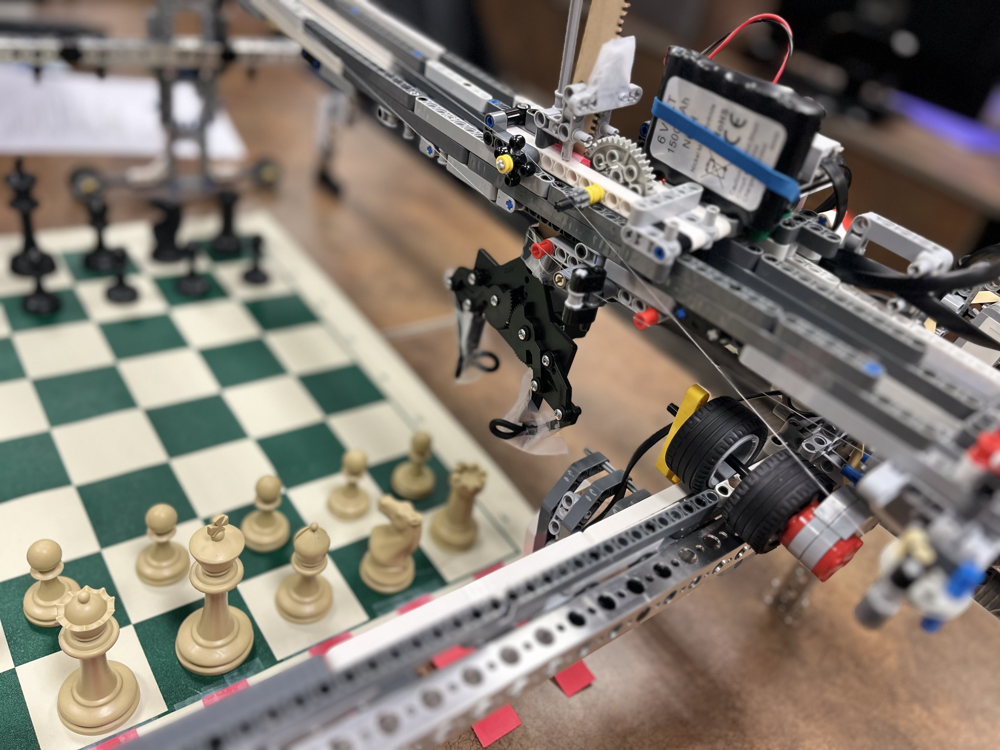

Chess Robot: Carl Bot
I conceptualized and developed a robotic chess robot was a truly fascinating and challenging experience. As part of a class project, my team and I set out to create a robot that could not only move chess pieces on a board, but also integrate game logic and based on the current game state. To bring our vision to life, we utilized a variety of innovative technologies and techniques. Constrained to Lego components for the mechanical assembly, which provided a balance of customization and ease of assembly. We integrated the logic using C++ and RobotC, which allowed us to program the robot's decision-making abilities and movement. One of the most innovative aspects of our robot was the use of a ski system with a mounted pulley system for x-y movement, combined with an actuator for vertical movement of the claw. This allowed for precise and fluid movement of the claw, which was essential for selecting and moving chess pieces. To further enhance the precision of the movement, we incorporated motor encoders, sensors, and actuators. This allowed us to control the movement of the claw with great accuracy and to ensure that it could pick up and move the chess pieces with ease. The result was an impressive and sophisticated robotic chess robot. It was able to move the chess pieces with precision, identify each chess piece, and even evaluate basic game logic. The project was a great success, and it was extremely satisfying to see our hard work come to life in such a spectacular way.